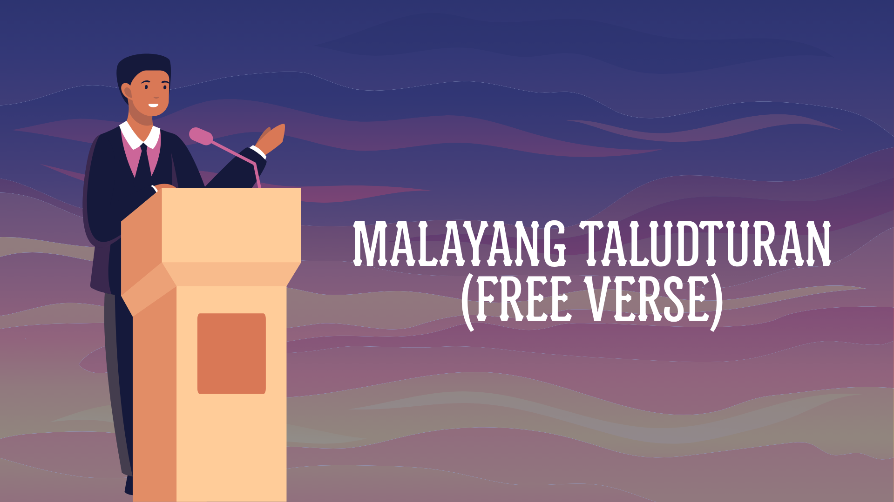

Malayang Taludturan FREE VERSE
Baitang 11–12 at Kolehiyo • Oras: 3–5 minuto • Kasuotan: Filipiniana/Barong o katutubong kasuotan
Mekaniks
- Bukas sa lahat ng mag-aaral mula sa Baitang 11–12 at kolehiyo.
- Ang tulang bibigkasin ay nasa Wikang Filipino at umiikot sa temang pangkalahatan.
- Orihinal na piyesa sa pormang malayang taludturan at nakabatay sa tema.
- Nakasuot ng Filipiniana/Barong o katutubong kasuotan.
- Haba ng pagtatanghal: 3–5 minuto.
Krayterya (100%)
| Pamantayan | Porsiyento |
|---|---|
| Nilalaman ng Tula | 40% |
| Baryasyon ng Boses | 30% |
| Emosyon o Damdamin | 20% |
| Kumpas o Galaw | 10% |